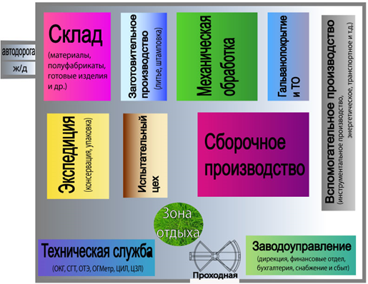
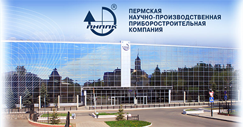
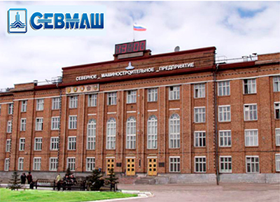
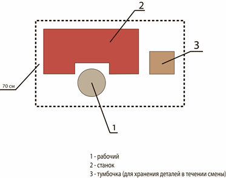
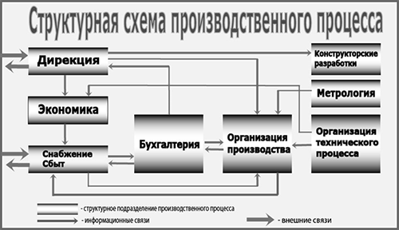
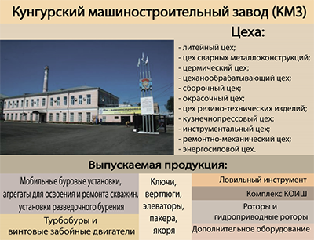

Глава 2. Машиностроительное предприятие
2.1 Машиностроительное предприятие
Предприятие – это самостоятельный хозяйствующий субъект, созданный для производства продукции, выполнение работ и оказание услуг с целью удовлетворения общественных потребностей и получения прибыли.
Машиностроительное предприятие – это основа машиностроительного производства.
Машиностроительное производство является ведущей отраслью всей промышленности, её «сердцевиной». Продукция предприятий машиностроения играет решающую роль в реализации достижений научно-технического прогресса во всех областях хозяйства. Наиболее сложной является структура машиностроения. Она включает такие важнейшие отрасли, как энергетическое машиностроение, электротехническая, станкостроительная и инструментальная промышленность, приборостроение, ряд отдельных отраслей, выпускающих оборудование для добывающей и обрабатывающей промышленности, строительства, транспортное машиностроение и сельскохозяйственное машиностроение и др.
Генеральный план машиностроительного предприятия

Так выглядят современные машиностроительные предприятия с фасада.


2.2 Проиводственная структура
Производственная структура характеризует разделение труда между подразделениями предприятия и их кооперацию. Она оказывает существенное влияние на технико-экономические показатели производства, на структуру управления предприятием, организацию оперативного и бухгалтерского учета.
Профиль, масштабы, а также отраслевая принадлежность предприятия определяются составом, технологической специализацией, мощностью и размерами его производственных цехов, участков, мастерских. Все другие звенья предприятия - функциональные отделы, лаборатории, управляющие органы полностью соизмеряются с характеристиками производственных подразделений и создаются исключительно для обеспечения их нормальной эффективной работы.
Элементарной единицей предприятия является рабочее место, где размещаются исполнитель работы и обслуживаемое им оборудование.

Рабочие места формируются в участки, которые могут организовываться по технологическому (токарный, фрезерный, шлифовальный) или предметному (участок обработки шестерен) принципам; может быть, организация по предметно-технологическому принципу.
Ответственность за содержание рабочего места в чистоте и изготовление качественных деталей несет рабочий. Он обязан выполнять все распоряжения мастера и в случае внештатных ситуаций докладывать мастеру.
Ответственность за состояние производственной и технологической дисциплины, а также за санитарное состояние на участке несет старший мастер.
Цех - это основная структурная единица машиностроительного предприятия, обособленная в административном отношении и выполняющая определенную часть общего производственного процесса.
Цех состоит из нескольких участков.
Руководит цехом начальник цеха с помощью своих помощников, двух заместителей (заместитель начальника цеха по производству и заместитель по подготовке производства).
Заместителю начальника цеха по производству подчиняются службы:
- Технологическое бюро цеха (ТБ);
- Планово – диспетчерское бюро цеха (ПДБ);
- Бюро труда и заработной платы (БТЗ).
Заместителю начальника цеха по подготовке производства подчиняются службы:
- Служба механика, энергетика;
- Служба инструментального хозяйства (СИХ);
- Независимая служба бюро технического контроля.
Машиностроительные цехи делятся на 4 вида.
- Основные цехи:
- заготовительные цехи (литейный, кузнечно-прессовый, кузнечно-штамповочный, цех сварных конструкций);
- обрабатывающие цехи (механообрабатывающие, деревообрабатывающие, термические, гальванические, лакокрасочные);
- сборочные цехи (комплектация, узловая сборка, окончательная сборка, комплектация).
- Вспомогательные:
- инструментальный цех;
- цех нестандартного оборудования;
- модельный цех;
- ремонтный цех;
- энергетический цех;
- транспортный цех.
- Подсобные:
- цех упаковки;
- цех изготовления тары;
- консервация продукции;
- погрузка и отправка продукции потребителю.
- Побочные:
- цех утилизации и переработки металлических отходов;
- цех прессования стружки.
2.3 Направление развития МСП
Производственный процесс – это взаимодействие персонала и орудий труда, организованное в рамках данной модели, обеспечивает изготовление и ремонт продукции.
Структура предприятия - это его внутреннее строение, характеризующее состав подразделений и систему информационных связей, подчиненность и взаимодействие между ними.
Совокупность производственных подразделений (цехов, участков, обслуживающих хозяйств и служб) прямо или косвенно участвующих в производственном процессе, их количество и состав определяют производственную структуру предприятия.
Структурная схема производственного процесса МСП.

Структурные подразделения производственного процесса и их функции.
- Руководство.
Функции:
- определение и утверждение номенклатуры выпуска продукции предприятия;
- определение и утверждение производственной программы выпуска продукции на календарный период (год, квартал, месяц);
- определение экономической эффективности и целесообразности всех структурных единиц производственного процесса;
- научная организация подготовки и управления производством;
- научная организация труда;
- научная организация управления кадрами;
- политика качества;
- внешние связи.
- Экономика.
Функции:
- расчет экономической эффективности всех подсистем производственного процесса;
- сравнительный анализ расчетов и фактически полученных показателей экономической эффективности;
- рекомендации по улучшению экономических показателей и повышению экономической эффективности.
- Конструкторские разработки.
Функции:
- разработка электронной модели изделия по техническому заданию, согласование ее с заказчиком и утверждение;
- разработка комплекта конструкторской документации по утвержденной электронной модели (чертежи монтажных и электрических схем, спецификации, чертежи деталей и сборочные чертежи);
- разработка технических условий и методик испытаний на создаваемую продукцию;
- проведение научно-исследовательских опытно-конструкторских работ (НИОКР) на базе производства;
- изменение конструкторской документации на основании результатов НИОКР;
- сопровождение продукции в процессе ее изготовления (авторский надзор).
- Метрология
Функции:
- метрологическая экспертиза технологической и конструкторской документации;
- обеспечение единства измерений в соответствии с требованиями закона;
- метрологический контроль и надзор за производственным процессом.
- Организация технологического процесса
Функции:
- изучение конструкторской документации и выдача замечаний по выявленным ошибкам;
- определение типа производства;
- выбор типа заготовки;
- материальное нормирование – расчет норм основных и вспомогательных материалов на изделие;
- разработка материальной спецификации;
- выбор оборудования оснастки инструментов;
- разработка ведомости оборудования и инструментов;
- разработка и оформление технологических процессов на обрабатывающие, сборочные, испытательные и другие виды работ;
- технологическое нормирование - расчет норм основного технологического времени (То) на обработку, испытания, сборку и др.;
- технологическое нормирование - расчет норм штучного времени (Тшт.) на обработку, испытания, сборку и др.;
- расчет степени загруженности оборудования по штучному времени;
- научная подготовка производства – разработка расцеховок, планировочных спецификаций и моделей диспетчирования;
- разработка политики качества;
- разработка планировок на размещение оборудования, участков и цехов;
- o разработка генерального плана предприятия - это документ на расположение объектов предприятия, наземных и подземных коммуникаций, разъездных путей на территории предприятия.
- Организация производства
Функции:
- изучение технологических процессов;
- выдача заявок на приобретение оборудования, приспособлений и инструментов;
- выдача заявок на установку и подключение оборудования в соответствии с требованиями;
- выдача заявок на приобретение материалов, комплектующих для производства деталей и изделий;
- запуск деталей в производство;
- планирование сменно-суточного задания;
- реализация политики качества – контроль за соблюдением технологических и производственных дисциплин;
- изготовление и сдача продукции;
- отчетность по расходу основных и вспомогательных материалов;
- учет затрат живого труда, подготовка данных по вопросам труда и заработной платы бухгалтерии;
- уборка производственных помещений, офисов.
- Снабжение и сбыт
Функции:
- закупка материалов, комплектующих, инструментов, оборудования, и передача их производству;
- сбыт готовой продукции.
- Бухгалтерия
Функции:
- считают и контролируют приход и расход денег в соответствии с требованиями централизованных документов по бухучету и документов, принятых на предприятие.
2.4 Структура кадров МСП
Структура современного машиностроительного предприятия рассматривается как составляющие вещественного и человеческого капитала.
Человеческий капитал - это основа успешности конкурентоспособности, экономического роста и эффективности предприятия. Человеческий капитал – трудовой коллектив.
На формирование трудового коллектива влияет:
- Структура производственного процесса;
- Организация труда и управление коллективом предприятия.
Структура производственного процесса должна базироваться на научных принципах организации труда, которые предполагают:
- Углубление разделения труда;
- Улучшение кооперации труда на основе целесообразного расчленения производственного процесса;
- Рациональный подбор профессионально – квалифицированного состава рабочих и их расстановку;
- Совершенствование трудовых процессов путем разработки и внедрения рациональных методов и приемов труда;
- Улучшение обслуживания рабочих мест и четкое регламентирование каждой функции обслуживания;
- Совершенствование нормирования труда, снижение затрат труда;
- Организация и проведение систематического производственного инструктажа и повышение квалификации всех категорий работающих;
- Создание благоприятных санитарно-гигиенических и психофизиологических в эстетическом отношении условий труда.
Организация труда и управление коллективом предприятия включает:
- Найм сотрудников в условиях не полной занятости;
- Расстановку работников в соответствии со сложившейся системой производства;
- Распределение обязанностей между работниками;
- Подготовка и переподготовка кадров;
- Стимулирование труда;
- Совершенствование организации труда;
- Забота о работниках.
Все работающие на машиностроительном предприятии делятся на 2 категории.
Первая категория - промышленно-производственный персонал занятый производством и его обслуживанием.
Вторая категория - персонал непромышленных организаций (работники столовых, врачебно-санаторных учреждений, профилактических учреждений).
Промышленно-производственный персонал состоит из следующих категорий:
- Руководители (директор и его заместители, начальники цехов, отделов и их заместители, начальники бюро и производственные мастера /старшие мастера/, сменные производственные мастера);
- Инженерно-технические работники (главный инженер, главный конструктор и его служба, главный технолог и его служба, главный метролог и его служба, главный металлург и его служба, главный энергетик и его служба, главный механик и его служба, главный конструктор АСУ и его служба);
- Служащие (работники финансово-расчётных и снабженческо-сбытовых служб);
- Рабочие (основные и вспомогательные работники, непосредственно занятые созданием материальных ценностей или оказанием производственных услуг).
2.5 Документы, регламентирующие трудовые отношения
- Трудовой кодекс РФ обеспечивает гарантии трудовых прав и свобод граждан, создание благоприятных условий труда, защиту прав и интересов работников и работодателей.
- Трудовой договор – это соглашение между работодателем и работником.
- Коллективный договор – представляет собой правовой акт, регулирующий социально- трудовые отношения в организации или у ИП. Коллективный договор включает формы, системы и размеры оплаты труда, выплаты пособий, компенсаций, занятость, переобучение, рабочее время, время отдыха, соблюдение интересов работника, экологическая безопасность и охрана здоровья, гарантии и льготы работника, совмещение работы и обучения, частичная или полная оплата питания.
- Должностная инструкция состоит из 5 разделов:
- Общее положение;
- Квалификационные требования и необходимые знания (раздел формируется на основании стандарта);
- Должностные обязанности;
- Права;
- Ответственность.
2.6 Научно-технический потенциал МСП
Наука – это сфера человеческой деятельности, функции которой – выработка и теоретическая систематизация объективных знаний о действительности.
Оценка роли науки может быть дана путем анализа научно-технического потенциала (НТПт).
Научно-технический потенциал - это обобщённая характеристика уровня развития науки, инженерного дела, техники, возможностей и ресурсов.
Научно-технический потенциала МСП включает:
- материально - техническую базу;
- научные кадры;
- информационную составляющую в виде нормативно - технической документации (технические задания, методики и т.д.);
- организационно - управленческую структуру.
Материально-техническая база науки - это совокупность средств научно-технического труда, включая научные организации, научное оборудование и установки, экспериментальные заводы, цехи и лаборатории, вычислительные центры и т.д.
На уровне отрасли, фирмы или компании речь идет, как правило, о материально-технической базе прикладных научно-исследовательских и опытно-конструкторских работ (НИОКР). Их цель - быстрое и эффективное воплощение научных идей в конкретные технические и технологические новшества.
Средства труда в сфере научно- технического прогресса можно разделить на четыре группы.
- Первая включает научные приборы, оборудование и измерительную аппаратуру, служащие для получения новой научной информации (специфические средства научного труда, которые изготавливаются в индивидуальном или мелкосерийном порядке применительно к задачам конкретных исследований и отличаются быстрыми сроками морального износа)
- Ко второй группе относятся электронно-вычислительные машины, которые используются для полунатурального моделирования объектов систем, автоматизированного конструирования, планирования экспериментов и регистрации результатов, поиска информации, частных инженерных и планово-экономических расчетов, управление ходом научно-производственного цикла.
- Третья группа - Опытно-производственное оборудование, играющее особую роль в процессе разработок и освоения нововведений. От аналогичного производственного оборудования оно отличается универсальным характером, меньшими масштабами установок, использованием специальных измерительных систем и т.д.
- В четвертую группу входят средства механизации исследований и разработок (копировальные, множительные, вычислительные устройства, оргтехника и т.д.), которые служат для снижения трудоемкости научно-вспомогательных работ, интенсификации научно-производственного цикла. Кроме того, научно-технические организации располагают зданиями, сооружениями, передаточными устройствами, транспортными средствами, инвентарем и т.д.
Вместе с тем, трудно выделить "чистую" техническую базу науки, обслуживающую только научные, проектные и исследовательские центры, так как НИОКР ведутся в рамках многих предприятий, фирм, объединений и опираются на общую производственно-техническую базу отрасли или страны.
Современное машиностроительное предприятие в своих инженерных центрах в качестве специфического предмета труда использует информацию.
Предметы труда в сфере научно-технического прогресса составляют всего несколько процентов общего объема потребляемых в народном хозяйстве материальных ресурсов. Для них характерны особые требования к качеству материалов, многообразие номенклатуры, быстрые темпы морального старения, небольшой объем поставок, неравномерность спроса, большая доля непредвиденных заказов, потребность в изделиях специального назначения, имеющих ограниченное применение.
Информационная составляющая в научно-техническом потенциале играет главную роль. В качестве специфического предмета труда здесь выступает информация об итогах предшествующих исследований, разработок и освоения нововведений. Ее носителями являются тематические карты о начатых и отчеты о законченных исследованиях и разработках, публикации и диссертации, содержащие новые теории, гипотезы, рекомендации, описания, формулы, схемы, чертежи и т.д.
На МСП выделяют следующие виды информации по характеру материальных носителей:
- Нормативно - техническая документация ( ГОСТы, ОСТы, технические задания );
- Проектно-конструкторская документация ( комплект рабочих чертежей деталей, сборочные чертежи изделий, монтажные схемы, электрические схемы, программные методики и т.д.);
- Образцы нововведений (технологические процессы, режимы и регламенты, опытные образцы);
- Научные отчеты (оформление результатов научно - исследовательских, опытно -конструкторских работ, технологических опытов и т.д.);
- Публикации и диссертации.
Для сотрудников машиностроительного предприятия, занятых разработкой конструкторской и технологической документацией, главными источниками пополнения информации являются:
- курсы повышения квалификации;
- экспериментальные работы;
- командировки;
- индивидуальное общение с коллегами.
Потребителем информации, разработанной инструкторами и технологами, является производство.
2.7 Машиностроительные предприятия России
Кунгурский машиностроительный завод (сокращенное название - ОАО «КМЗ машзавод») – крупнейший в России производитель самоходных буровых установок и агрегатов, предназначенных для структурно-поискового бурения на нефть, газ, воду и другие полезные ископаемые. Нефтегазопромысловое оборудование завода пользуется высоким спросом у ведущих нефтяных компаний России («Татнефть», «Башнефть», «Сургутнефтегаз», «Роснефть») и экспортируется в страны Восточной Европы, Южной Америки, Ближнего Востока, Африки.

Пермский моторный завод (сокращенное название - ОАО «ПМЗ Авиадвигатель») – ведет свою историю с 1997 года, когда крупнейшее российское предприятие «Пермские заводы» было реструктуризировано, и образовалось дочернее предприятие ОАО «ПМЗ-Авиадвигатель», унаследовавшее от пермского гиганта индустрии производство газотурбинных двигателей. Учредителями ОАО «ПМЗ» являются: ОАО «Пермские моторы» - 49%, Aviam Holding Company – 25%, ОАО «Интеррос» - 26%.
История же родоначальника завода ОАО «Пермские моторы» начинается в далеком 1934 году, когда был выпущен первый звездообразный мотор М-25. Уже через четыре года предприятие стало крупнейшим производителем авиационных моторов, а во время Великой Отечественной Войны завод выпустил более 32 тысяч моторов, что в 12 раз больше проектной мощности. Продукцией завода оснащались известные боевые самолеты Ла-5, Ту-2, Су-2.
В настоящий момент Пермский моторный завод является уникальным для России предприятием, занимающееся производством авиадвигателей 4-го поколения (ПС-90А), который успешно конкурирует с лучшими двигателями иностранного производства – PW2000 и RB211 производства США и Великобритании соответственно. В 2004 году наработка двигателей ПС-90А для пассажирских авиасамолетов превысила миллион часов.
Санкт Петербургский машиностроительный завод (сокращенное название – ОАО «Арсенал») – ведущее предприятие России,обладающее мощным потенциалом во всех сферах машиностроения. Завод выпускает продукцию для промышленного и оборонного комплекса страны. Изделия завода выпускаются под государственные заказы, а также с успехом реализуются в странах ближнего и дальнего зарубежья. Новейшие технологии и современные маркетинговые исследования обеспечивают высокую рентабельность выпускаемой продукции. Главная ценность завода – это более 3-х тысяч высококвалифицированных сотрудников.